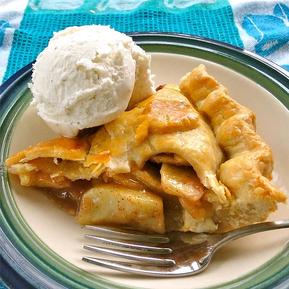

Apple Pie

Description
Apple pie ...so American, so delicious. A true classic. Enjoy!
Ingredients
- 2 (9 inch) unbaked pie crusts
- 7 cups peeled, cored and sliced apples
- 1 cup white sugar
- 2 tablespoons all-purpose flour
- 1 teaspoon ground cinnamon
- ⅛ teaspoon ground nutmeg
- ¼ teaspoon salt
- 2 tablespoons butter
Directions
- Preheat oven to 425 degrees F (220 degrees C)/.
- In a bowl combine apples, sugar, flour, cinnamon,
nutmeg, and salt. Place mixture in a pastry-lined 9 inch pie plate. Dot with butter
and adjust top crust that has been vented.
- Place in oven and bake at 425 degrees F (220 degrees C)
for 10 minutes. Turn oven temperature down to 275-300 degrees F (135-150 degrees C) and bake
40-50 minutes or until crust is golden brown and apples are tender. Let cool and serve.